Build the gear mechanisms, then verify them. These are the seven gear builds for Activity 2.2 — the same mechanisms as the chapter, with the real VEX build photos, animations, and a video of each one working. Use them at the bench.
Every mechanism now includes both the step-by-step Building a… and Examining a… videos from MythBadger, built with VEX EXP parts. Watch the build video before you assemble, then the examine video to see how the mechanism actually works.
Build your assigned mechanism, watch it move (animation + ▶ video), then fill that mechanism's row in the Evidence Chart in your Google Doc deliverable, with a captioned photo of your build. The numbered Conclusion Questions are answered separately at the end of the deliverable. Five more mechanisms from the MythBadger series (belt drive, cam & follower, crank & slider, lead screw, universal joint) follow at the end for exploration — they are not part of the graded chart.
▶ MythBadger — VEX Gear Tutorials (VEX EXP, 24 videos)
Every mechanism below has a step-by-step Building a… and Examining a… video from MythBadger, built with VEX EXP parts and aligned to this course. Start with Building the Platform, or play the whole 24-video playlist:
Simple Gear Train
Rotary in → rotary out · trades speed for torque
Build it
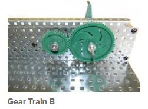
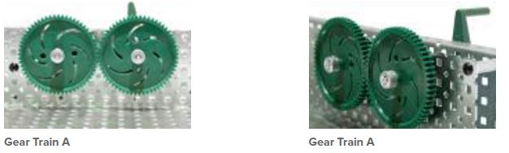
See it in motion
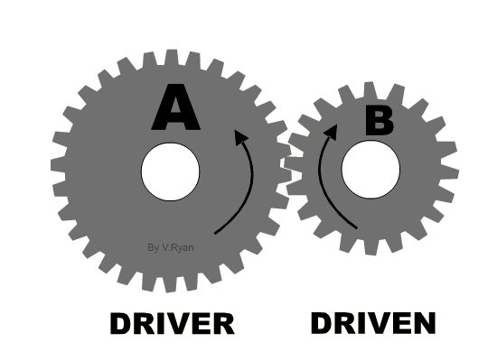
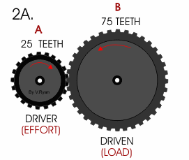
▶ MythBadger build & examine videos
Building
Examining
Also in the series: ▶ Gear Ratios — how tooth counts set speed and torque.
Fill this mechanism’s row in the Evidence Chart in your Google Doc deliverable — these are the columns to complete (Conclusion Questions are answered separately):
- Teeth: drive → driven
- Predicted ratio (driven ÷ drive)
- Measured ratio (turns in : out)
- Speed ↑↓= and torque ↑↓=
- Direction (same/opposite) and reversible?
- Where it's used (example)
Simple Gear Train with Idler
Rotary in → rotary out · direction changes, ratio doesn't
Build it
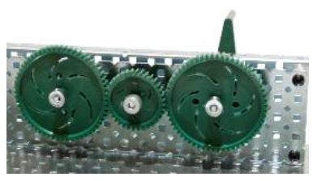
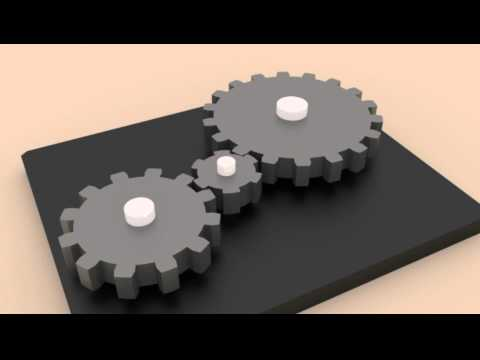
▶ MythBadger build & examine videos
Building
The idler is assembled inside the Simple Gear build — ▶ Building a Simple Gear. Add a third gear between the drive and driven gears to make the idler.
Examining
Fill this mechanism’s row in the Evidence Chart in your Google Doc deliverable — these are the columns to complete (Conclusion Questions are answered separately):
- Predicted ratio (does the idler change it?)
- Measured ratio (turns in : out)
- Speed ↑↓= and torque ↑↓=
- Direction between input and output
- Predict: direction if the idler were removed
- Where it's used (example)
Compound Gear Train
Rotary in → rotary out · stages MULTIPLY (new for 2.2)
Build it
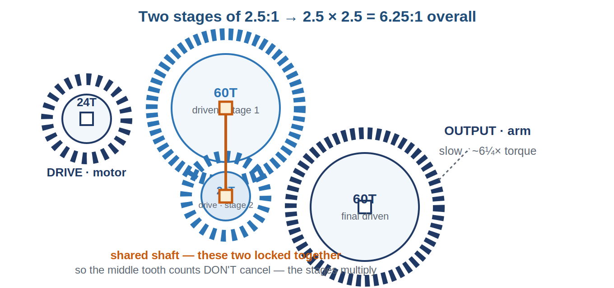
See it in motion
▶ MythBadger video
Building & examining
MythBadger covers building and examining the compound train in one video — it builds two gear stages on a shared shaft and shows how the stage ratios multiply.
Fill this mechanism’s row in the Evidence Chart in your Google Doc deliverable — these are the columns to complete (Conclusion Questions are answered separately):
- Teeth in each stage (stage 1 → stage 2)
- Predicted overall ratio = stage 1 × stage 2 (show the multiplication)
- Measured ratio (turns in : out)
- Did you reach at least 6:1?
- Speed ↑↓= and torque ↑↓=
- Why the shared-shaft gear doesn't cancel like an idler
Bevel Gear Assembly
Rotary in → rotary out · turns a 90° corner
Build it
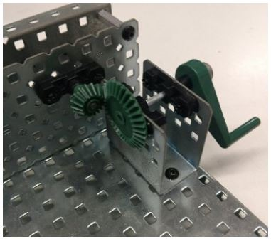
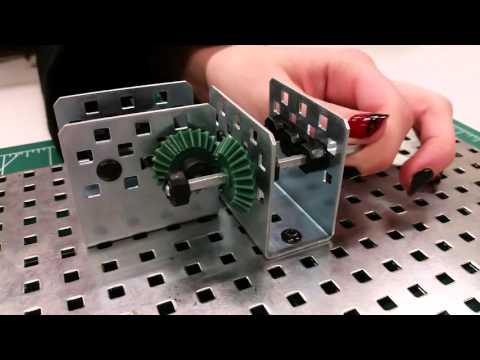
See it in motion
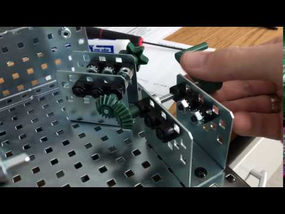
▶ MythBadger build & examine videos
Building
Examining
Fill this mechanism’s row in the Evidence Chart in your Google Doc deliverable — these are the columns to complete (Conclusion Questions are answered separately):
- Angle of input shaft to output shaft
- Predicted / measured ratio
- Speed ↑↓= and torque ↑↓=
- If the input gear were smaller, effect on speed/torque?
- Reversible?
- Where it's used (example)
Worm and Wheel
Rotary in → rotary out · huge reduction, self-locking
Build it
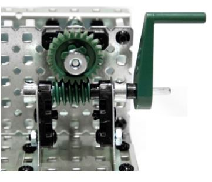
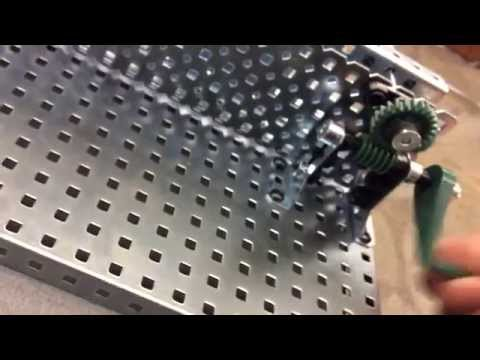
See it in motion
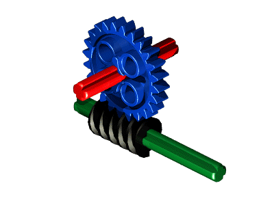
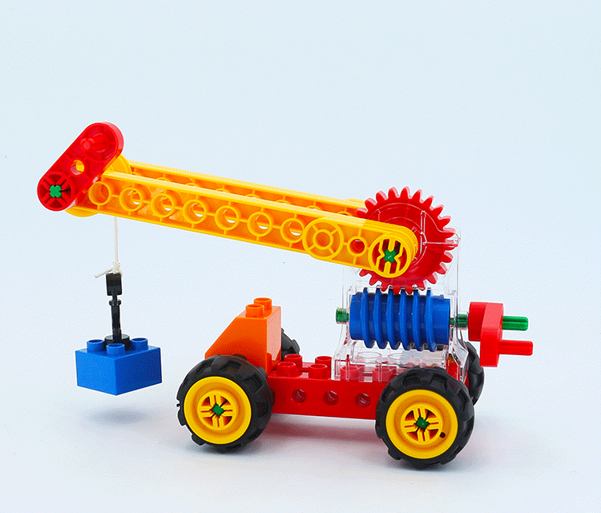
▶ MythBadger build & examine videos
Building
Examining
Fill this mechanism’s row in the Evidence Chart in your Google Doc deliverable — these are the columns to complete (Conclusion Questions are answered separately):
- Angle of input shaft to output shaft
- Predicted / measured ratio
- Speed ↑↓= and torque ↑↓=
- Reversible? (try to back-drive it by turning the wheel)
- Direction of travel reversible?
- Where it's used (example)
Rack and Pinion
Rotary in → linear out
Build it
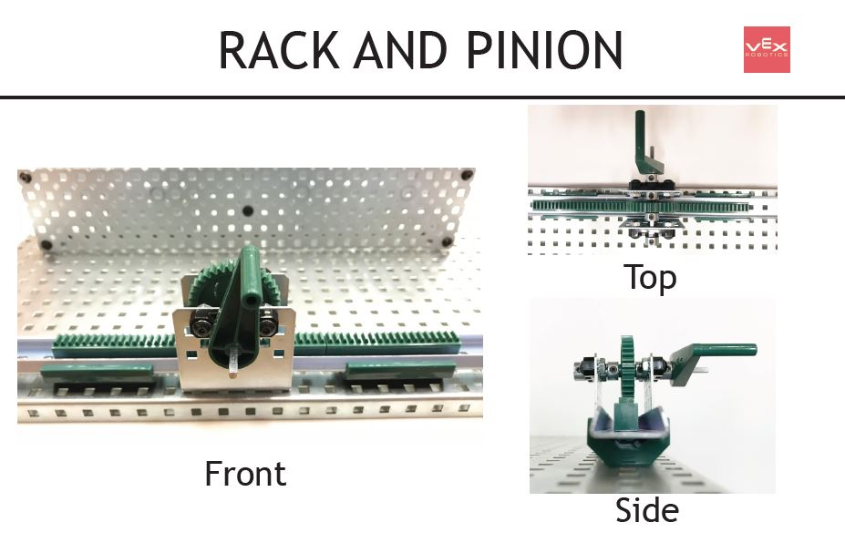
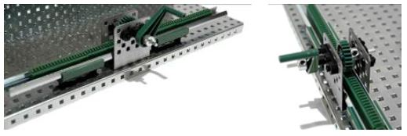
See it in motion
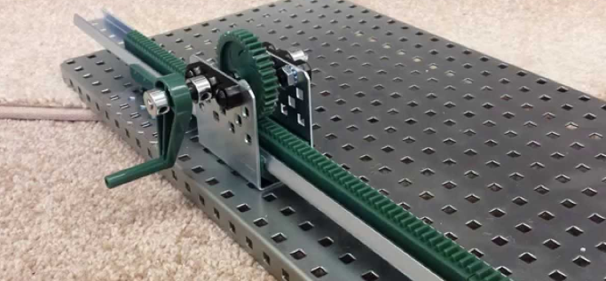
▶ MythBadger build & examine videos
Building
Examining
Fill this mechanism’s row in the Evidence Chart in your Google Doc deliverable — these are the columns to complete (Conclusion Questions are answered separately):
- Motion in → motion out
- Distance the rack moves per turn (ratio, if any)
- If the pinion were larger, shorter or longer travel?
- Reversible? (slide the rack to turn the pinion?)
- Direction reversible?
- Where it's used (example)
Chain Drive
Rotary in → rotary out · sends power across a distance, same direction
Build it
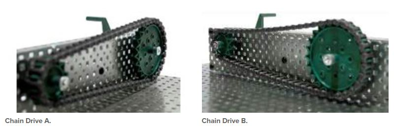
See it in motion
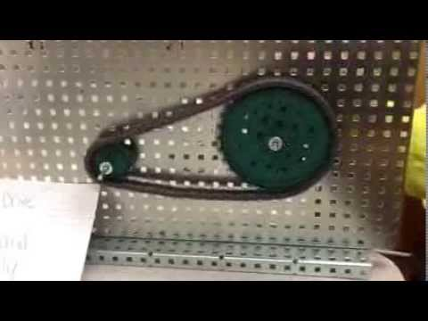
▶ MythBadger build & examine videos
Building
Examining
Fill this mechanism’s row in the Evidence Chart in your Google Doc deliverable — these are the columns to complete (Conclusion Questions are answered separately):
- Drive vs. driven sprocket; angle of input to output
- Predicted / measured ratio (train A)
- Speed ↑↓= and torque ↑↓=
- Effect if the small sprocket drives (image B)
- Same or opposite direction?
- Where it's used + advantage over spur gears
Belt Drive
Rotary in → rotary out · carries power across a gap, can slip
▶ MythBadger build & examine videos
Building
Examining
Watch both videos, then note (exploration — not graded):
- How a belt drive is like a chain drive — and how it differs
- What happens when the belt slips, and when that's useful
- Same or opposite direction between the two pulleys?
- Where you've seen a belt drive in a real machine
Cam & Follower
Rotary in → reciprocating (up-and-down) out
▶ MythBadger build & examine videos
Building
Examining
Watch both videos, then note (exploration — not graded):
- What kind of motion goes in, and what kind comes out
- How the shape of the cam changes the follower's movement
- Whether the follower can drive the cam backward
- Where a cam & follower is used (engines, toys, machines)
Crank & Slider
Rotary in → straight-line back-and-forth out
▶ MythBadger build & examine videos
Building
Examining
Watch both videos, then note (exploration — not graded):
- Rotary motion becomes what kind of motion?
- How this differs from a rack & pinion (also rotary → linear)
- Whether the slider can push the crank around (reversible?)
- Where a crank & slider appears (piston engines, pumps)
Lead Screw
Rotary in → linear out · high force, self-locking
▶ MythBadger build & examine videos
Building
Examining
Watch both videos, then note (exploration — not graded):
- How turning the screw moves the nut/carriage
- Why a lead screw produces so much force (like the worm & wheel)
- Whether pushing the carriage can spin the screw (self-locking?)
- Where a lead screw is used (clamps, vises, 3D printers, CNC)
Universal Joint
Rotary in → rotary out · transmits spin through an angle
▶ MythBadger build & examine videos
Building
Examining
Watch both videos, then note (exploration — not graded):
- What problem the universal joint solves (compared to a straight shaft)
- How the output speed varies as the joint spins through an angle
- What happens as the angle between the shafts gets larger
- Where a universal joint is used (drive shafts, socket wrenches)
Build photos & motion clips from the Stauffer MS Mechanical Gears / Mechanisms procedures deck (VEX EXP). Step-by-step build & examine videos from Mythbadger Videos — VEX Gear Tutorials playlist (24 videos). Animated diagrams by V. Ryan / technologystudent.com. Videos are external (YouTube); links open in a new tab.